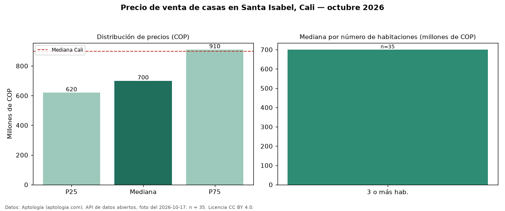

Precio de venta de casas en Santa Isabel, Cali — octubre 2026
COP 700 millones es el precio mediano de casas en venta en Santa Isabel, Cali (n = 35 avisos). Frente al total de Cali (COP 900 millones), el barrio está 22 % por debajo. El segmento con más oferta es el de 3 o más habitaciones (35 avisos, mediana COP 700 millones). 86 % de los avisos incluye parqueadero, y su mediana (COP 700 millones) es prácticamente igual a la general. Por mediana, es el puesto 29 de 39 barrios de Cali con al menos 30 avisos de casas en venta: en la franja media. El aviso más barato pide COP 520 millones y el más caro COP 3,20 mil millones. La dispersión es moderada: el cuartil superior (COP 910 millones) es 1,5 veces el inferior (COP 620 millones). Datos: Aptología (aptologia.com), API de datos abiertos, licencia CC BY 4.0 — https://www.aptologia.com/casas-en-venta/cali/santa-isabel. Archivos: PDF de 2 páginas, CSV con las cifras y gráfica PNG.

| Avisos únicos | 35 |
|---|---|
| Percentil 25 | COP 620.000.000 |
| Mediana | COP 700.000.000 |
| Percentil 75 | COP 910.000.000 |
Fuente: avisos vigentes de portales inmobiliarios recopilados por Aptología, deduplicados (mínimo 30 avisos únicos por celda). Precios pedidos, no cerrados. Fecha: 2026-10-18.